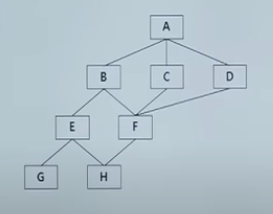
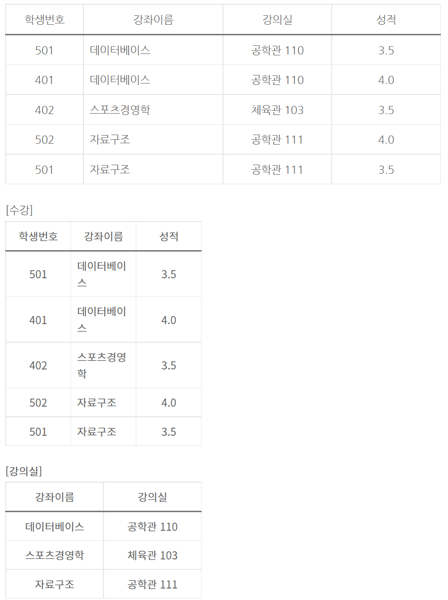

CHAPTER 01 소프트웨어 개발방법론
01. 소프트웨어 개발 방법론
소프트웨어 생명주기 모델
- 소프트웨어 생명주기는 시스템의 요구분석부터 유지보수까지 전 공정을 체계화한 절차이다.
- 시스템이 개발될 때부터 운용과 유지보수를 거쳐 생애를 마칠 때까지 어떠한 순서를 밟는지에 대한 작업 프로세스를 모델화한 것이다.
소프트웨어 생명주기 모델 프로세스
| 순서 | 프로세스 | 설명 | 활동 |
|---|---|---|---|
| 1 | 요구사항 분석 |
다양한 이해관계자의 상충할 수도 있는 요구사항을 고려하여
새로운 제품이나 변견된 제품에 부합하는 요구와 조건을
결정하는 단계 개발할 소프트웨어의 기능과 제약조건, 목표 등을 소프트웨어 사용자와 함께 명확히 정의하는 단계 |
기능 요구사항 비기능 요구사항 |
| 2 | 설계 | 시스템 명세 단계에서 정의한 기능을 실제 수행 할 수 있도록 수행 방법을 논리적으로 결정하는 단계 |
시스템 구조 설계 프로그램 설계 사용자 인터페이스 설계 |
| 3 | 구현 |
설계 단계에서 논리적으로 결정한 문제 해결 방법을 특정
프로그래밍 언어를 사용하여 실제 프로그램을 작성하는
단계 프로그램인 언어 선택, 기법, 스타일, 순서, 등을 결정하는 단계 |
인터페이스 개발 자료 구조 개발 오류 처리 |
| 4 | 테스트 | 시스템이 정해진 요구를 만족하는지, 예상과 실제 결과가 어떤 차이를 보이는지 검사하고 평가하는 단계 |
단위 테스트 통합 테스트 시스템 테스트 인수 테스트 |
| 5 | 유지보수 | 시스템이 인수되고 설치된 후 일어나는 모든 활동 | 예방, 완전, 교정, 적응 유지보수 |
소프트웨어 생명주기 모델 종류
소프트웨어 생명주기 모델 종류로는 폭포수 모델, 프로토타이핑 모델, 나선형 모델, 반복적 모델이 있다.
| 종류 | 설명 | ||
|---|---|---|---|
| 폭포수 모델 (Waterfall Model) |
소프트웨어 개발 시 단계를 확실히 마무리 지은 후에 다음
단계로 넘어가는 모델 가장 오래된 모델 선형 순차적 모형을 고전적 생명주기 모형이라고도 함 모형의 적용 경험과 성공 사례가 많음 단계별 정의와 산출물이 명확 요구사항 변경이 어려움
|
||
| 프로토타이핑 모델 (Prototyping Model) |
고객이 요구한 주요 기능을 프로토타입으로 구현하여,
고객의 피드백을 반영하여 소프트웨어를 만들어가는 모델 프로토타입은 발주자나 개발자 모두에게 공동의 참조 모델을 제공 프로토타입은 구현 단계의 구현 골격 |
||
| 나선형 모델 (Spiral Model) |
시스템 개발 시 위험을 최소화하기 위해 점진적으로 완벽한
시스템으로 개발해 나가는 모델
|
||
| 반복적 모델 (Iteration Model) |
구축대상을 나누어 병렬적으로 개발 후 통합하거나.
반복적으로 개발하여 점증 완성시키는 SDLC모델 사용자의 요구사항 일부분 혹은 제품 일부분을 반복적으로 개발하여 최종시스템으로 완성하는 모델 |
소프트웨어 생명주기 모델 간 비교
| 구분 | 폭포수모델 | 프로토타이핑 모델 | 나선형 모델 | 반복적 모델 |
|---|---|---|---|---|
| 절차도 | 요구사항 분석 설계 구현 테스트 |
요구사항 분석 프로토타입 개발 프로토타입 평가 구현 테스트 |
계획 및 정의 위험분석 개발 고객평가 |
개발대상 분석분석분석 설계설계설계 구현구현구현 |
| 특징 | 순차적 접근 | 프로토타입 개발 | 위험분석, 반복개발 | 증분방식으로 병행 개발 |
| 장점 | 이해가 용이 관리가 편리 |
요구분석 용이 타당성 검증 가능 |
위험성 감소와 변경에 유연한 대처 | 병행 개발로 인한 일정 단축가능 |
| 단점 | 요구사항 변경이 어려움 | 프로토타입 폐기에 따른 비용 증가 | 단계 반복에 따른 관리 어려움 | 병행 개발에 따른 관리 비용 증가 |
소프트웨어 개발방법론
- 소프트웨어 개발 방법론은 소프트웨어 개발 전 과정에 지속적으로 적용할 수 있는 방법, 절차, 기법이다.
- 소프트웨어를 하나의 생명체로 간주하고 소프트웨어 개발의 시작부터 시스템을 사용하지 않는 과정까지의 전 과정을 형상화한 방법론이다.
소프트웨어 개발방법론 종류
소프트웨어 개발방법론 종류로는 구조적 방법론, 정보공학 방법론, 객체지향 방법론, 컴포넌트 기반 방법론(CBD), 애자일 방법론, 제품 계열 방법론이 있다.
| 구분 | 폭포수모델 | 프로토타이핑 모델 | 나선형 모델 | 반복적 모델 |
|---|---|---|---|---|
| 절차도 | 요구사항 분석 설계 구현 테스트 |
요구사항 분석 프로토타입 개발 프로토타입 평가 구현 테스트 |
계획 및 정의 위험분석 개발 고객평가 |
개발대상 분석분석분석 설계설계설계 구현구현구현 |
| 특징 | 순차적 접근 | 프로토타입 개발 | 위험분석, 반복개발 | 증분방식으로 병행 개발 |
| 장점 | 이해가 용이 관리가 편리 |
요구분석 용이 타당성 검증 가능 |
위험성 감소와 변경에 유연한 대처 | 병행 개발로 인한 일정 단축가능 |
| 단점 | 요구사항 변경이 어려움 | 프로토타입 폐기에 따른 비용 증가 | 단계 반복에 따른 관리 어려움 | 병행 개발에 따른 관리 비용 증가 |
애자일(Agile)
애자일(Agile) 방법론의 개념
- 애자일 방법론은 절차보다는 사람이 중심이 되어 변화에 유연하고 신속하게 적응하면서 효율적으로 시스템을 개발할 수 있는 신속 적응적 개발 방법론이다.
- 개발 기간이 짧고 신속하며, 폭포수 모형에 대비되는 방법론으로 개발과 함께 즉시 피드백을 받아서 유동적으로 개발할 수 있다.
애자일 방법론 등장 배경
애자일 방법론은 기존 개발방법론의 한계를 극복하기 위해 등장했다
| 등장배경 | 설명 |
|---|---|
| 소프트웨어 개발 환경의 변화 |
소프트웨어 개발 트렌드가 모바일 환경으로 변화 시장 적시성과 잦은 배포의 중요성 부각 |
| 기존 개발방법론의 한계 |
전통적 방법론은 문서 및 절차 위주로 변화에 신속한 대응이
어려움 빠르게 적용하고 효율적으로 개발할 수 있는 방법론의 필요성 증가 |
애자일 방법론의 유형
애자일 방법론은 대표적으로 XP, 린(Lean), 스크럼(SCRUM) 등이 있다
| 종류 | 내용 | ||||||||||||||||||||||||||||||||||||||
|---|---|---|---|---|---|---|---|---|---|---|---|---|---|---|---|---|---|---|---|---|---|---|---|---|---|---|---|---|---|---|---|---|---|---|---|---|---|---|---|
| XP (eXtreme Programming) |
의사소통 개선과 즉각적 피드백으로 소프트웨어 품질을
높이기 위한 방법론이다. 1~3주의 반복(iterration) 개발주기 5가지 가치와 12개의 실천항목이 존재 XP의 5가지 가치
|
||||||||||||||||||||||||||||||||||||||
| 스크럼 (SCRUM) |
매일 정해진 시간, 장소에서 짧은 시간의 개발을 하는 팀을
위한 프로젝트 관리 중심 방법론 주요 개념 설명 백로그 (Backlog) 제품과 프로젝트에 대한 요구사항 스프린트 (Sprint) 2~4주의 짧은 개발 기간으로 반복적 수행으로 개발품질 향상 스크럼 미팅 (Scrum Meeting) 매일 15분 정도 미팅으로 To-Do List 계획수립 데일리 미팅(Daily Meeting)이라고도 함 스크럼 마스터 (Scrum Master) 프로젝트 리더, 스크럼 수행 시 문제를 인지 및 해결하는 사람 스프린트 회고 (Sprint Retrospective) 스프린트 주기를 되돌아보며 정해놓은 규칙 준수 여부, 개선점 등을 확인하는 기록 해당 스프린트가 끝난 시점이나 일정 주기로 시행 번 다운 차트 (Burn Down Chart) 남아있는 백로그 대비 시간을 그래픽적으로 표현한 차트 백로그는 보통 수직축에 위치하며 시간은 수평축에 위치 |
||||||||||||||||||||||||||||||||||||||
| 린 (LEAN) |
도요타의 린 시스템 품질기법을 소프트웨어 개발 프로세스에
적용해서 낭비 요소를 제거하여 품질을 향상시킨 방법론 JIT(Just In Time), 칸반(Kanban) 보드 사용 7가지 원칙 낭비제거, 품질 내재화, 지식 창출, 늦은 확정, 빠른 인도, 사람 존중, 전체 최적화 |
애자일과 전통적 방법론 비교
| 비교 대상 | 애자일 방법론 | 전통적 방법론 |
|---|---|---|
| 계획수립 | 유동적 범위 설정 | 확정적 범위 설정 |
| 업무 수행 | 팀 중심 업무 수행 |
관리자의 주도적 명령과 통제 개인 단위로 업무수행 |
| 개발/검증 | 반복 주기 단위로 소프트웨어를 개발/검증 | 분석/ 설계/ 구현/ 테스트를 순차적으로 수행 |
| 팀관리 | 업무 몰입, 팀 평가 | 경쟁, 개별, 평가 |
| 문서화 | 문서화보다는 코드를 강조 | 상세한 문서화를 강조 |
| 성공요소 | 고객 가치 전달 | 계획/ 일정 준수 |
| 유형 | XP, 스크럼, 린 | 폭포수, 프로토타입, 나선형 |
02. 비용산정, 일정관리 모형
비용산정 모형 개념
비용산정 모형은 소프트웨어 규모파악을 통한 투입자원, 소요시간을 파악하여 실행 가능한 계획을 수립하기 위해 비용을 산정하는 방식이다.
비용산정 모형 분류
비용산정 모형은 햐향식 산정방법과 상향식 산정방법이 있다.
| 분류 | 설명 | 종류 |
|---|---|---|
| 하향식 산정방법 | 경험이 많은 전문가에게 비용 상정을 의뢰하거나 여러 전문가와 조정자를 통해 산정하는 방식 | 전문가 판단 델파이 기법 |
| 상향식 산정방식 | 세부적인 요구사항과 기능에 따라 필요한 비용을 계산하는 방식 |
코드 라인 수(Loc) Man Month COCOMO 모형 푸트남 모형 기능점수 모형 |
비용산정 모형 종류
- LoC(Lines of Code)
- LoC 모형은 소프트웨어 각 기능의 원시 코드 라인 수의 낙관치, 중간치, 비관치를 측정하여 예측치를 구하고 이를 이용하여 비용을 산정하는 방식이다
- 측정이 쉽고 이해하기 쉬워 많이 사용한다.
- 예측치를 이용하여 생산성, 노력, 개발 기간 등의 비용을 산정한다.
- 예측치 = o+4m+p/6(o:낙관치, m:중간치, p:비관치)
- 비관치: 가장 많이 측정된 코드 라인 수
- 중간치: 측정된 모든 코드 라인 수의 평균
- 낙관치: 가장 적게 측정된 코드 라인 수
- Man Month 모형
- Man Month 모형은 한 사람이 1개월 동안 할 수 있는 일의 양을 기준으로 프로젝트 비용을 산정하는 방식이다.
- (Man Month) = (LoC)/(프로그래머의 월간 생산성)
- (프로젝트 기간) + (Man Month)/(프로젝트 인력)
- COCOMO(COnstructive COst MOdel) 모형
- COCOMO 모형은 보헴(Bohem)이 제안한 모형으로 프로그램 규모에 따라 비용을 산정하는 모형이다.
- 비용산정 결과는 프로젝트를 완성하는데 필요한 노력(Man-Month)으로 산정한다.
- 비용 견적의 강도 분석 및 비용 견적의 유연성이 높아 소프트웨어 개발비 견적에 널리 통용된다.
- 규모에 따라 유형이 조직형(= 기본형, 단순형), 반 분리형, 임베디드형으로 나뉜다.
| 유형 | 설명 |
|---|---|
| 조직형 (Organic Model) |
기관 내부에서 개발된 중 소규모의 소프트웨어로 일괄 자료 처리나 과학 기술 계산용, 비즈니스 자료 처리 계발에 적용 |
| 반 분리형 (Semi-Detached Model) |
단순형과 임베디드형의 중간형 트랜잭션 처리 시스템이나, 데이터베이스 관리 시스템, 컴파일러, 인터프리터와 같은 유틸 개발에 적용 30만(300KDSI) 라인 이하의 소프트웨어를 개발하는 유형 |
| 임베디드형 (Embedded Model) |
초대형 규모의 트랜잭션 처리 시스템이나 운영체제, 실시간
처리 시스템 등의 시스템 프로그램 개발에 적용 30만(300KDSI) 라인 이상의 소프트웨어를 개발하는 유형 |
- 푸트남(Putnam) 모형
- 푸트남 모형은 소프트웨어 개발주기의 단계별로 요구할 인력의 분포를 가정하는 방식이다.
- 푸트남이 제안한 것으로 생명주기 예측 모형이라고 한다.
- 시간에 따른 함수로 표현되는 Rayleigh-Noden 곡선의 노력 분포도를 기초로 한다.
- 기능점수(FP; Function Point)
-
기능점수 모형은 요구 기능을 증가시키는 인자별로 가중치를
부여하고, 요인별 가중치를 합산하여 총 기능의 점수를 계산하여
비용을 산정하는 방식이다.
기능점수(FP)= 총 기능점수 X [0.65 + (0.1 X 총 영향도)]
- 경험을 바탕으로 단순, 보통, 복잡한 정도에 따라 가중치를 부여한다.
| 소프트웨어 기능 증대 요인 | 가중치 | ||
|---|---|---|---|
| 단순 | 보통 | 복잡 | |
| 자료 입력(입력 양식) | 3 | 4 | 6 |
| 정보 출력(출력 보고서) | 4 | 5 | 7 |
| 명령어(사용자 질의 수) | 3 | 4 | 5 |
| 데이터 파일 | 7 | 10 | 15 |
| 필요한 외부 루틴과의 인터페이스 | 5 | 7 | 10 |
일정관리 모델 개념
일정관리 모델은 프로젝트가 일정 기한 내에 적절하게 완료될 수 있도록 관리하는 모델이다.
일정관리 모델 종류
일정관리 모델 종류는 주 공정법, PERT, 중요 연쇄 프로젝트 관리가 있다.
| 모델 | 설명 |
|---|---|
| 주 공정법 (CPM; Critical Path Method) |
여러 작업의 수행 순서가 얽혀 있는 프로젝트의 일정을
계산하는 기법 모든 자원 제약 사항을 배제한 상태로 프로젝트의 시작과 끝을 나타내는 노드(Node)와 노드 간의 연결을 통해 공정을 계산하기 위한 액티비티(Activity) 표기법 |
|
PERT (Program Evaluation and Review Technique) |
일의 순서를 계획적으로 정리하기 위한 수렴 기법으로 비관치, 중간치, 낙관치의 3점 추정방식을 통해 일정을 관리하는 기법 |
|
중요 연쇄 프로젝트 관리 (CCMP; Critical Chain Project Management) |
주 공정 연쇄법으로 자원제약사항을 고려하여 일정을 작성하는 기법 |
CHAPTER 02 현행 시스템 분석
현행 시스템 파악
현행 시스템 파악 개념
- 현행 시스템 파악이란 현행 시스템이 어떤 하위 시스템으로 구성되어 있고 제공 기능 및 연계 정보는 무엇이며 어떤 기술 요소를 사용하는지를 파악하는 활동이다.
- 사용하고 있는 소프트웨어 및 하드웨어는 무엇인지, 네트워크의 구성은 어떻게 되어 있는지 파악하는 활동이다.
현행 시스템 파악 절차
현행 시스템 파악을 위해서는 3단계의 절차가 필요하다
-
1단계 구성/기능/인터페이스 파악
- 시스템 구성 현황 파악
- 시스템 기능 파악
- 시스템 인터페이스 현황 파악
-
2단계 아키텍처 및 소프트웨어 구성 파악
- 아키텍처 파악
- 소프트웨어 구성 파악
-
3단계 하드웨어 및 네트워크 구성 파악
- 시스템 하드웨어 현황 파악
- 네트워크 구성 파악
현행시스템 구성/기능 및 인터페이스 파악
| 절차 | 설명 | 작성 시 고려 사항 |
|---|---|---|
| 현행 시스템 구성 현황 파악 | 조직의 주요 업무를 처리하는 기간 업무와 이를 지원하는 지원 업무로 구분하여 파악 | 각 업무에 속하는 정보시스템들의 명칭, 주요기능들을 명시 |
| 기능 현황 파악 | 단위 업무 시스템이 현재 제공하고 있는 기능 파악 | 단위 업무 시스템 기능들을 주요 기능과 하부 기능으로 구분하여 계층 형으로 표시 |
| 인터페이스 현황 파악 | 단위 업무 시스템이 다른 시스템과 주고 받는 데이터의 종류, 데이터 형식, 프로토콜, 연계유형, 주기 파악 | 데이터 형식(XML, 고정 포맷, 가변 포맷 등)을 주고받는지, 어떤 통신규약(TCP/IP, X.25 등)을 사용하고 있고, 연계유형(EAI 등)은 무엇인지 등을 표시 |
현행 시스템 아키텍처 및 소프트웨어 구성 파악
| 절차 | 설명 | 작성 시 고려 사항 | ||||||||||||||||
|---|---|---|---|---|---|---|---|---|---|---|---|---|---|---|---|---|---|---|
| 현행 시스템 아키텍처 구성 파악 | 기간 업무를 수행하기 위하여 게층별로 어떠한 기술 요소들을 사용하고 있는지 최상위 수준에서 파악 | 단위 업무 시스템별로 아키텍처가 다른 경우에는 가장 핵심이 되는 기간 업무처리 시스템 을 기준으로 파악 | ||||||||||||||||
| 소프트웨어 구성 파악 | 단위 업무 시스템의 업무 처리를 위해 설치되어 있는 소프트웨어들의 제품명, 용도, 라이선스 적용 방식, 라이선스 수 파악 |
상용 소프트웨어의 경우에는 라이선스 적용 방식의 기준
(사이트, 서버, 프로세서, 코어, 사용자 수 등)과 보유한
라이선스 수량 파악 중요
|
하드웨어 및 네트워크 구성 파악
| 절차 | 설명 | 작성 시 고려 사항 | |||||||||||||||||||
|---|---|---|---|---|---|---|---|---|---|---|---|---|---|---|---|---|---|---|---|---|---|
| 하드웨어 구성 파악 | 단위 업무 시스템들이 운용되고 있는 서버의 위치 운용 서버의 주요 양(CPU 처리 속도, 메모리 크기, 하드디스크의 용량 등)과 수량, 이중화 구현 여부를 파악 |
이중화는 기간 업무의 서비스 기간 장애 대응 정책에 따라
필요성 여부가 결정되며, 이에 따라 인프라 구축 기술
난이도 및 비용 증가 가능성이 존재
|
|||||||||||||||||||
| 네트워크 구성 파악 | 업무 처리 시스템을 위해 어떤 네트워크 장비를 사용하여 어떻게 구성되어 있는지 파악 |
네트워크 구성도의 작성을 통해 서버의 위치, 서버 간의
네트워크 연결 방식을 파악할 수 있도록 표현
|
소프트웨어 아키텍처(Software Architecture) 개념
소프트웨어 아키텍처는 여러 가지 소프트웨엉 구성요소와 그 구성요소가가진 특성 중에서 외부에 드러나는 특성, 그리고 구성요소 간의 관계를 표현하는 시스템의 구조나 구조체이다.
소프트웨어 아키텍처 프레임워크
- 소프트웨어의 아키텍처 프레임워크(Software Architecture Framework)
- 소프트웨어 아키텍처 프레임워크는 소프트웨어 집약적인 시스템에서 아키텍처가 표현해야 하는 내용 및 이들 간의 관계를 제공하는 아키텍처 기술 표준이다.
소프트웨어 아키텍처 프레임워크 구성요소
| 구성요소 | 설명 | ||||||
|---|---|---|---|---|---|---|---|
| 아키텍처 프레임워크 (Architecture Framework) |
아키텍처를 기록하기 위한 산출물들 이해관계자들의 시스템에 대한 관심을 관점에 맞추어 작성한 뷰로 표현 개별 뷰, 뷰 개괄 문서, 인터페이스 명세 등이 있음 |
||||||
| 이해관계자 (Stackeholder) |
시스템 개발에 관련된 모든 사람과 조직 고객, 최종사용자, 개발자, 프로젝트 관리자, 유지보수자, 마케팅 담당자 등을 포함 |
||||||
| 관심사 (Concerns) |
시스템에 대해 이해관계자들의 서로 다른 의견과 목표
|
||||||
| 관점 (Viewpoint) |
개별 뷰를 개발할 때 토대가 되는 패턴이나 양식 이해관계자들이 서로 다른 역할이나 책임으로 시스템이나 산출물들에 대해 보고 싶은 관점 |
||||||
| 뷰 (View) |
서로 관련 있는 관심사들의 집합이라는 관점에서 전체
시스템을 표현 시스템에 대한 아키텍처 설명에는 하나 이상의 뷰로 구성 |
||||||
| 근거 (Radionale) |
아키텍처 결정 근거 회의 결과, 보고 결과 |
||||||
| 목표 (Mission) |
환경 안에서 한 명 이상의 이해관계자들이 의도하는 시스템의 목적, 사용, 운영방법 | ||||||
| 환경 (Environment) |
시스템에 영향을 주는 요인으로 개발, 운영 등의 외부 요인 등으로 시스템에 영향을 주는 요인 | ||||||
| 시스템 (System) |
각 애플리케이션, 서브 시스템, 시스템의 집합, 제품군 등의 구현체 |
소프트웨어 아키텍처 4+1 뷰
- 소프트웨어 아키텍처 4+1 뷰는 고객의 요구사항을 정리해 놓은 시나리오를 4개의 관점에서 바라보는 소프트웨어적인 접근 방법이다
- 4개의 분리된 구조로 구성되는 아키텍처 개념을 제시하고, 이들 4개 구조가 서로 충돌되지 않는지, 시스템의 요구사항을 충족시키는지를 증명하기 위해 체크방법으로 유스케이스를 사용한다
소프트웨어 아키텍처 4+1뷰 구성요소
4+1에서 1은 유스케이스 뷰이고 4는 논리 뷰, 구현 뷰, 프로세스 뷰, 배포 뷰다
-
소프트웨어 테스트 방법의 일반적인 원리 중 하나인 살충제 패러독스(Pesticide Paradox)의 개념을 간략히 설명하시오.
동일한 테스트 케이스로 테스트를 계속해서 반복하면 더 이상 새로운 결함을 발견할 수 없다는 원리
-
데이터 마이닝의 개념을 단략히 서술하시오.
많은 데이터 안에서 체계적이고 자동적으로 통계적 규칙이나 패턴을 찾아내는 기법
-
프로토콜에 필요한 3요소
구문, 의미, 타이밍
-
다음 설명에 부합하는 마크업 언어는 무엇인지 영문 약어로 쓰시오.
-HTML의 단점을 보안한 인터넷 언어로, SGML의 복잡한 단점을 개성한 다목적 마크업 언어이다.
-웹 상에서 구조화된 문서를 상호교환 가능하도록 설계된 웹 표준 문서 포맷으로 메타 데이터가 명확하다.
-사용자가 새로운 태그와 속성를 정의할 수 있는 확장성을 가진다.
-유니코드를 사용하여 전 세계의 모든 문자를 처리 가능하며 장치와 시스템에 독립적이다.XML
-
다음 설명 중 빈 칸 ( )에 가장 부합하는 프로그래밍 언어를 영문 약어로 쓰시오.
-( )(은)는 데이터를 저장하거나 전송할 때 많이 사용되는 경량의 DATA 교환 형식이다. ( )표현식은 사람과 기계 모두 이해하기 쉬우며 소용량으로 최근에는 XML을 대체해서 데이터 전송 등에 많이 사용한다. Ajax에서 서버와 송신하며 데이터 교환을 쉽게 하기 위해 ( )(을)를 데이터 전송현식으로 많이 사용한다.
-( )의 문법은 Key와 Value가 쌍으로 존재하며 태그로 표현하기 보다는 중괄호({})같은 형식으로 하고, 값을 ','로 나열하기에 그 표현이 간단하다.JSON
-
학생(Student) 테이블에 컴퓨터과 학생 50명, 인터넷과 학생 100명, 사무자동화과 학생 50명에 관한 데이터가 있다고 가정할 때 다음에 주어지는 SQL문을 각각 실행 시키면 결과 튜플 수는 각각 몇개인가?
SELECT DEPT FROM STUDENT;
SELECT DISTINCT DEPT FROM STUDENT;
SELECT COUNT(DISTINCT DEPT) FROM STUDENT WHERE DEPT = '컴퓨터과'
200, 3, 1
-
운영체제의 비선점 프로세스 스케쥴링 기법 중 하나인 HRN은 어떤 작업이 서비스 받을 시간과 그 작업이 서비스를 기다린 시간으로 결정되는 우선순위에 따라 CPU를 할당하는 기법이다. HRN의 우선 순위를 결정하는 계산식을 쓰시오
(대기시간+서비스시간)/(서비스시간)
-
트랜잭션 특성 ACID 중 일관성, 영속성 외 특성 입력
Atomic(원자성), Isolation(고립성, 독립성)
-
다음 보기에서 설명하는 네트워크 공격 유형에 해당하는 용어를 쓰시오. -공격자가 패킷의 출발지 주소(Address)나 포트(Port)를 임의로 변경해 출발지와 목적지 주소(또는 포트)를 동일하게 함으로써, 공격 대상 컴퓨터의 실행속도를 느리게 하거나 동작을 마비시켜 서비스 거부 상태에 빠지도록 하는 공격방법. 수신되는 패킷 중 출발지 주소(또는 포트)와 목적지 주소(또는 포트)가 동일한 패킷등을 차단함으로써 공격을 피할 수 있다.
랜드어택(Land Attack)
-
128비트 암호화 해시 함수이다. RFC 1321로 지정되어 있으며, 주로 프로그램이나 파일이 원본 그대로인지를 확인하는 무결성 검사 등에 사용된다.
1991년 로널드 라이베스트(Ronald Rivest)가 예전에 쓰이던 MD4를 대체하기 위해 고안했다.MD5
-
하나의 프로그램을 몇 개의 작은 부분으로 분할하는 경우, 그 분할 단위를 일반적으로 모듈(Module)이라고 한다. 다음 중 바람직한 모듈에 대한 설명으로 빈칸 1, 2에 알맞는 용어를 쓰시오
모듈화는 중심으로 하는 소프트웨어 설계 방법에서는 모듈의 독립성을 높게 해주는 것이 좋은 설계방향이다. 모듈의 독립성을 높여주기 위해서는 각 모듈 간의 관련성을 나타내는 (1)(은)낮추고, 모듈 안의 요소들이 서로 관련되어 있는정도를 나타내는 (2)(은)는 높이는 것이 바람직하다.
1. 결합도, 2. 응집도
-
[C언어] 버블 정렬 오름차순 문제
#include <stdio.h> #define SIZE 5 int main(void) { int arr[SIZE] = {75, 100, 95, 50, 85}; int i, j, temp; for(i=1; i<SIZE; j++) { for(j=0; j<SIZE-i; j++) { if(arr[j] > arr[j+1]) { temp = arr[j] arr[j] = arr[j+1] arr[j+1] = temp; } } } for(i=0; i<SIZE; i++) { printf("%d", arr[i]) } }50 75 85 95 100
-
[Java] 배열 결과 입력
public class Test { static int nSize = 4; public staic void main(String[] args) { int[] arr = new int[nSize]; makeArray(arr); for(int i=0; i<nSize; i++) { System.out.print(arr[i] + " ") } } public static void makeArray(int[] arr) { for(int i=0; i<nSize; i++) { arr[i] = i; } } }0 1 2 3
-
[C언어]switch ~ case 결과입력
public class Test { public static void main(String[] args) { int i=3, k=1; switch(i) { case 0: case 1: case 2: case 3: k=0; case 4: k+=3; case 5: k-=10; default: k--; } System.out.printLn(k); } }-8
-
릴리즈 노트(Release Note)는 고객 편의성을 고려하여 조직의 최종 사용자인 고객과 잘 정리된 릴리즈 정보를 공유하는 문서이다.
릴리즈 노트의 내용으로는 보통 특정 소프트웨어 릴리즈의 최근 변경사항, 개선 사항 및 버그 수정을 간결히 요약되어 있다.
릴리즈 노트 작성 항목 중 문서 이름(릴리즈 노트 이름), 제품 이름, 버전 번호. 릴리즈 날짜, 참고 날짜, 노트 버전 등을 기술하는 작성항목이 무엇인지 쓰시오.헤더(Header)
-
LoC 기법 개발 기간 계산식과 답 입력 (총라인 30000, 개발자 5명 월평균 300라인)
30000/300/5 = 20개월
-
OSI 7 참조 모델 중 두 장비간의 전송을 위한 연결이나 전달 등의 인터페이스의 기계적, 전기적, 절차적 특성을 정의하여 비트를 물리적인 매체를 통해 전송하는 계층을 쓰시오
물리계층
-
다음 설명 중 빈 칸( 1 ~ 3 )에 가장 부합하는 애플리케이션 성능 측정을 위한 지표를 쓰시오
애플리케이션 성능이란 사용자의 요구 기능을 해당 애플리케이션이 최소의 자원을 사용하면서 얼마나 빨리,
많은 기능을 수행하는가를 육안 또는 도구를 통하여 점검하는 것을 말한다.
이를 측정하기 위한 지표는 ( 1 ), ( 2 ), ( 3 ), 자원 사용률이 있다.1. 처리량, 2. 응답시간, 3. 경과시간 또는 반환시간
-
비정규화(Denormalization)의 개념 : 반정규화에 대한 문제 (약술형)
시스템에 성능 향상, 개발 과정의 편의성, 운영의 단순화를 목적으로 수행되는 의도적인 정규화원칙 위배행위를 말한다.
-
다음은 어떤 프로그램의 구조를 나타낸다. Fan-in의 수가 2이상인 모듈의 이름을 쓰시오
F, H
-
한국아이티 보안관제실에서 근무한다. 정보시스템 운영 중 서버가 다운되거나 자연재해나 시스템 장애 등의 이유로 대고객 서비스가 불가능한 경우가 종종 발생한다. 이와 같은 상황에서의 "비상사태 또는 업무중단 시점부터 업무가 복구되어 다시 정상가동 될 때까지의 시간" 을 의미하는 용어를 쓰시오.
목표복구시간(RTO)
-
파이썬 문제
a={'일본', '중국', '한국'} a.add('베트남') a.add('중국') a.remove('일본') a.update({'홍콩', '한국', '태국'}) print(a){'중국', '한국', '베트남', '홍콩', '태국'}
-
비동기식 자바스크립트 XML통신기법
AJAX
-
고객의 요구사항 변화에 유연하게 대응하기 위해 일정한 주기를 반복하면서 개발하는 방법론, 워터폴에 대비되는 방법론으로 최근 회사에서 각광받는 방법론 (시제품)
애자일(Agile)
-
자바 객체 생성 ( ) 채우기
class Parent { void show(){ System.out.printLn("Parent") } } class child extends Parent { void show() { System.out.printLn('Child') } } public class Main { public static void main(String[] args) { Parent pa = ( ) child(); pa.show(); } }new
-
SQL SELECT 작성 (in 사용)
-학번, 이름을 학생 테이블에서 3,4학년인 학생을 검색
-IN 함수 사용SELECT 학번, 이름 FROM 학생 WHERE 학년 IN(3, 4);
-
트랜잭션 Rollback에 대해 설명하시오.
트랜잭션 실패시 트랜잭션 실행 이전으로 되돌리는 데이터 제어어
-
무결성과 인증을 보장하는 인증헤더(AH)와 기밀정을 보장하는 암호화(ESP)를 이용한 IP 보안 프로토콜, 망 계층(network layer, 3계층)인 인터넷 프로토콜(IP)에서 보안성을 제공해주는 표준화 기술
IPSec
-
애플리케이션을 실행하지 않고, 소스코드에 대한 코딩 표준, 코딩 스타일, 코드 복잡도 및 남은 결함을 발견하기 위하여 사용 (테스트 자동화 도구 유형)
정적 분석 도구
-
한 개체의 상태가 바뀌면 그 객체에 의존하는 다른 객체들한테 연락이 가고 자동으로 내용이 갱신되는 방식으로 일대다 (one-to-many) 의존성을 가지는 디자인 패턴. 서로 상호작용을 하는 객체 사이에서는 가능하면 느슨하게 결합(Loose coupling)하는 디자인을 사용해야 한다.
옵저버 패턴(Observer pattern)
-
휴대 전화를 비롯한 휴대용 장치를위한 운영 체제와 미들웨어, 사용자 인터페이스 그리고 표준 응용 프로그램(웹 브라우저, 이메일 클라이언트, 다문 메시지 서비스(SMS), MMS등을 포함하고 있는 소프트웨어 스택이자 리눅스 모바일 운영 체제이다. 개발자등이 자바와 코틀인 언어로 응용 프로그램을 작성할 수 있게 하였으며, 컴파일된 바이트코드를 구동할 수 있는 런타임 라이브러리를 제공한다.
안드로이드
-
SQL 인덱스 작성-student 테이블의 name 속성에 idx_name 이름의 인덱스 생성
CREATE INDEX idx_name ON student(name);
-
HTTP, HTTPS, SMTP를 통해서 XML 기반의 데이터를 주고 받는 프로토콜 Envelop, Header, Body로 구성 됨 / 웹 서비스(Web Service) 방식에서 파일 전송은 HTTP 기반의 ( )을 사용하여 송수신한다. ( ) 대신 레스트 풀(RESTful) 프로토콜(Protocol)로 대체할 수 있다.
SOAP
-
SQL Injection을 설명하시오(약술형)
1. 사용자의 입력값 등 외부 입력값이 SQL 쿼리에 삽입되어 공격자가 원하는 SQL 쿼리문을 실행하는 공격기법
2. 웹 응용 프로그램에 강제로 SQL 구문을 삽입라여 내부 데이터베이스(DB) 서버의 데이터를 유출 및 변조하고 관리자 인증을 우회하는 공격 기법 -
UI 설계 원칙에서 정확하고 완벽하게 사용자의 목표가 달성될 수 있도록 제작하는 원칙
유효성
-
a.txt에 대해 권한 부여
-사용자에게 읽기, 쓰기, 실행 권한 부여
-그룹에게 읽기, 실행 권한 부여
-그 외에게 실행 권한 부여chmod 751 a.txt
-
전세계 오픈된 정보를 하나로 묶는 방식. linked data와 open data의 합성어(영문 풀네임)
linked open data
-
데이터 베이스 설계 순서 (보기에 개념적 설계, 논리적 설계, 물리적 설계 주어짐, 요구사항 분석 -> ( ) -> ( ) -> ( ) -> 구현)
개념적 설계, 논리적 설계, 물리적 설계
-
자바 상속, super 키워드 이용 결과값 묻는 문제
class A { int a; A(int a) { this.a = a; } void display() { System.out.printLn('a='+a); } } class B extends A { B(int a) { super(a); super.display(); } } public class Main { public static void main(String[] args){ B obj = new B(10); } }a=10
-
소프트웨어 개발 과정에서 변경 사항을 관리하는 기법은 ( ) 기법이라 하며 ( ) 기법을 활용한 도구로는 CVS, SVN, Git 등이 있다.
형상관리
-
리팩토링의 목적에 대한 설명을 작성하시오.
-리팩토링의 목적은 소프트웨어를 보다 이해하기 쉽고, 수정하기 쉽도록 만드는 것이다.
-결과의 변경없이 코드의 구조를 재조정하는 것으로 가독성을 높이고, 유지보수를 쉽게 하기 위한 목적
-코드의 외부 행위는 바꾸지 않고 내부 구조를 개선시켜 소프트웨어를 보다 이해하기 쉽고, 수정하기 쉽도록 만드는 것 -
다음의 출력 결과를 쓰시오.
#include <stdio.h> void main() { int c=0; int i=0; while(i<10) { i++; c*=i; } print("%d", c); }0
-
다음 학생 테이블에서 이름이 민수인 튜플을 삭제하도록 결과를 작성하시오.
-대,소문자는 구분하지 않습니다.
-세미콜론(;)은 생략가능합니다.
-속성명에 작은 따옴표(' ')를 사용합니다.DELETE FROM 학생 WHERE 이름 = '민수';
-
TCP/IP에서 신뢰성이없는 IP를 대신하여 송신측으로 네트워크의 IP 상태 및 에러 메시지를 전달해주는 프로토콜을 ( )이라 한다.
ICMP
-
다음 출력결과를 쓰시오.
public class Test { public static void main (String []args) { int i=0; int sum=0; while(i<10) { i++; if(i%2==1) continue; sum+=i; } System.out.print(sum); } }30
-
심리학자 톰 마릴은 컴퓨터가 메세지를 전달하고 메세지가 제대로 도착했는지 확인하며 도착하지 않았을 경우 메시지를 재전송하는 일련의 방법을 '기술적 은어'를 뜻하는 ( )이라는 용어로 정의하였다.( )안에 들어갈 용어는?
프로토콜
-
EAI 구축 유형 Message Bus, Hybrid를 제외한 나머지 두 가지 유형은?-4개의 그림, 설명을 표로 표시함-용어에 괄호되어 있었음
포인트 투 포인트, 허브 앤 스포크
-
다음 출력결과를 쓰시요
abstract class Vehicle { String name; abstract public String getName(String val); public String getName() { return "Vehicle name" + name; } } class Car extends Vehicle { public Car(String val) { super.name = val; } public String getName(String val) { return "Car name :" + val; } public String getName(byte val[]) { return "Car name" + val; } } public class Test { public static void main(String[] args) { Vehicle obj = new Car("Spark"); System.out.print(obj.getName()); } }Vehicle name : Spark
-
다음의 출력 결과를 쓰시오.
int r1() { return 4; } int r10() { return (30+r1()); } int r100() { return (200+r10()); } int main() { printf("%d", r100()); return 0; }234
-
동치 분할 테스트, 경계값 분석 테스트 등 내부 구조를 보지 않고 하는 테스트는 무엇인가?
블랙박스 테스트
-
형상통제에 관한 설명을 작성하시오
형상 항목의 버전 관리를 위해서 변경 여부와 변경 활동을 통제하는 활동 산출물의 변경사항을 버전별로 관리하여 목표 시스템의 품질 향상을 지원하는 활동
-
분기 커버리지 과정 순서 배열
1234561 124567 124561
-
대표적인 내부 라우팅 프로토콜로 대규모 네트워크에 적합하고 링크 상태 라우팅 프로토콜로도 불리는 라우팅 프로토콜은 무엇인가?
OSPF
-
C++에서 생성자의 의미에 대한 설명을 작성하시오
객체 생성 시 초기화 작업을 위한 함수로써, 객체를 생성할 때 반드시 호출되고 제일 먼저 실행된다.
new 연산자를 통해서 객체를 생성할 때 반드시 호출이 되고 제일 먼저 실행되는 일종의 메소드 -
데이터베이스에서 스키마에 대한 설명을 작성하시오.
데이터베이스의 구조와 제약조건에 대한 명세를 기술한 것
데이터베이스의 구조와 제약조건에 관한 전반적인 명세를 기술한 메타 데이터의 집합이다. -
헝가리안 표기법에 대한 설명을 작성하시오.
컴퓨터 프로그래밍에서 변수 및 함수의 이름 및 인자 앞에 데이터 타입을 명시하는 코딩 규칙
-
다음 성적 테이블에서 평균이 90이상인 과목 이름과 최소점수, 최대점수의 결과를 작성하시오.
-3가지의 과목이름이 주어짐(행도 여러개)
-.으로 표시된것을 빈 값이 아닌 정확한 값이 기억나지 않아 .으로 표시한 것
-대, 소문자는 구분하지 않습니다.
-WHERE 구문은 사용하지 않습니다.
-GROUP BY, HAVING 구문은 필수로 사용해야 합니다.
-세미콜론(;)은 생략가능합니다.
-별칭 (AS) 을 사용해야 합니다.
-속성명에 작은 따옴표(' ')를 사용해야 합니다.SELECT 과목이름, MIN(점수) AS 최소점수, MAX(점수) AS 최대점수 FROM 성적 GROUP BY 과목이름 HAVING AVG(점수) >= 90;
-
UI 설계원칙 중 직관성에 대한 설명을 작성하시오.
누구나 쉽게 이해하고 사용할 수 있어야 한다.
-
릴레이션 A, B가 있을 때 릴레이션 B 조건에 맞는 것들만 릴레이션 A에서 튜플을 분리해 프로젝션하는 관계대수 기호를 쓰시오.
÷
-
다음 속성을 주소라고 하고 크기는 20으로 제한한다. 학생 테이블에 컬럼을 추가하는 결과를 작성하시오.
( ① ) TABLE 학생 ( ② ) 주소 VARCHAR(20);
1. ALTER, 2. ADD
-
IPv4의 확장형, 대안으로 나온 것으로 128비트 16비트씩 ;으로 구분
IPv6
-
디자인 패턴에는 생성, 구조, 이것이 있다.
행위
-
패키지 내부의 사각형이 다른 패키지 내부의 사각형을 import하는 구조(그림) / UML 다이어그램 에서 <<import>> order 점선 화살표
패키지 다이어그램
-
데이터베이스 회복(Recovery) 기법 중 rollback 시 redo, undo가 모두 실행되는 트랜잭션 처리법으로 트랜잭션 수행 중에 갱신 결과를 DB에 즉시 반영한다. 데이터를 변경하면 로그 파일로 저장되며 모든 내용 수정 시 즉시 데이터베이스에 반영된다.
즉시 갱신 기법
-
다음 빈 칸에 알맞은 답을 쓰시오.
public class Test { Public static void main(String[] args){ int a[] = new int[8]; int i =0, n=10; while( ① ) { a[i++] = ② ; n /= 2; } for(i=7; i>=0; i++){ System.out.printf("%d", a[i]); } } }① = n>0, ② = n%2
-
3행 5열 배열 출력 시 배열 크기 지정하는 문제 (int [][])
public class Test { public static void main(String[] args) { int[][] array = new int[ ① ][ ② ]; int n = 1; for(int i=0; i<;3; i++){ for(int j=0; j<5; j++){ array[i][j] = i*3 + (i+1); System.out.print(array[i][j] + ""); } System.out.printLn(); } } }1. 3, 2. 5
-
스니핑에 대해서 약술하시오.
-스니핑은 공격대상에게 직접 공격하지 않고 데이터만 몰래 들여다 보는 수동적 공격기법이다.
-네트워크의 중간에서 남의 패킷 정보를 도청하는 해킹 유형의 하나로 수동적 공격에 해당한다. -
컴퓨터 네트워킹에서 쓰이는 용어로, IP패킷의 TCP/UDP 포트 숫자와 소스 및 목적지의 IP주소 등을 재기록하면서 라우터를 통해 네트워크 트래픽을 주고 받는 기술로 네트워크 주소 변환이라고 한다.
NAT
-
다음의 출력 결과를 쓰시오
lol = [[1, 2, 3], [4, 5], [6, 7, 8, 9]] print(lol[0]) print(lol[2][1]) for sub in lol: for item in sub: print(item, end=" ") print()[1, 2, 3]
7
1 2 3
4 5
6 7 8 9
-
온라인 금융 거래 정보를 블록으로 연결하여 피투피(p2p) 네트워크 분산 환경에서 중앙 관리 서버가 아닌 참여자(피어, peer)들의 개인 디지털 장비에 분산 저장시켜 공동으로 관리하는 방식은 무엇인가?
블록체인
-
분산 환경에서 빅데이터를 저장하고, 처리할 수 있는 자바 기반의 오픈 소스 프레임워크로, 더그 커팅과 마이크 캐퍼렐라가 개발했으며 구글 맵리듀스를 대체한다.
하둡
-
데이터 베이스의 이상현상 3종류
삽입 이상, 삭제 이상, 갱신 이상
-
프로세스의 상태를 쓰시오(프로세스 상태 전이도)
1. 준비, 2. 실행 3. 대기
-
특정 몇몇 입력 값들에 대해서만 원하는 결과를 제공해주는 오라클로 전 범위 테스트가 불가한 경우 사용한다. 경계값, 구간 별 예상 값 결과 작성 때 사용한다.
샘플링 오라클
-
~60 구간, 60~70 구간, 70~80 구간, 80~90 구간, 90~100 구간 표에서 각 구간마다 하나씩 테스트 데이터가 주어짐 (테스트 데이터: 55점, 65점, 78점, 85점, 95점)
동치 분할 테스트(동등 분할 테스트)
-
SQL: where 쓰지말 것, GROUP BY 쓸 것, AS(alias)사용할 것, 세미콜론(;) 생략 가능, 인용 필요시' 사용
-결과 테이블;
학과 학과별 튜플 수
전기 1
컴퓨터 2
전자 2
-SELECT 학과, COUNT(학과) AS '학과별 튜플 수' GROUP BY 학과
-SELECT 학과, COUNT(*) AS '학과별 튜플 수' FROM 학생 GROUP BY 학과; -
1960년대 말에 미국 AT&T 벨(Bell) 연구소에서 개발한 운영체제로 거의 C언어로 구현한다. 구조적 파일 시스템, 시스템의 파일이 하나의 트리 구조를 가짐
유닉스
-
실행 결과를 쓰시오
char *p = "KOREA"; printf('%s\n', p); printf('%s\n', p+3); printf('%c\n', *p); printf('%c\n', *(p+3)); printf('%c\n', *p+2);KOREA
EA
K
E
M
-
실행결과를 쓰시오
Class Parent { int compute(int num) { if(num <= 1)return num; return compute(num-1) + compute(num-3); } } Class Child extends Parent { int compute(int num) { if( num <= 1 )return num; return compute(num-1) + compute(num-3); } } Class Test { public static void main (String[] args) { Parent obj = new Child(); System.out.print(obj.compute(4)); } }1
-
보안 요소 중 가용성에 대해서 약술하시오.
-가용성은 권한을 가진 사용자나 애플리케이션이 원하는 서비스를 지속 사용할 수 있도록 보장하는 특성이다.
-가용성은 인가받은 사용자는 언제라도 사용 가능한 것을 의미한다.
-
물리주소(MAC 주소)로 IP주소를 찾는 프로토콜을 작성하시오.
RARP
-
[보기]
구현 / 개념설계 / 논리적 설계 / 요구사항 / 물리적 설계
보기를 토대로 (1) ~ (3)에 알맞은 답안을 쓰시오.
(1) ~의 결과로 테이블 정의서, 명세서 등이 있음
(2) 결과로 E-R 다이어그램이 나옴
(3) 과정에서 정규화 과정이 수행함
1. 물리적 설계(물리), 2. 개념적 설계(개념), 3. 논리적 설계(논리)
-
웹 서비스명, 제공 위치, 메시지 포맷, 프로토콜 정보 등 웹 서비스에 대한 상세 정보가 기술된 XML 형식으로 구현되어 있는 언어는 무엇인가?
WSDL
-
다음 (1), (2)에 알맞은 답안을 쓰시오.
(1)( )요구사항은 시스템이 제공하는 기능 또는 서비스에 대해 상세하게 기술된 요구사항이다.
(2)( )요구사항은 시스템 속성이나 시스템에 의해 제공되는 서비스나 기능에 대한 제약사항에 대해 기술되어 있다.1. 기능적 요구사항, 2. 비기능적 요구사항
-
파이썬 문제 (부분점수 없음)
class arr; a = ["Seoul", "Kyeonggi", "Inchon", "Daejoen", "Deagu", "Pusan"] str01 = '' for i in arr.a: str01 = str01 + i[0] print(str01)SKIDDP
-
SQL 문제
SELECT COUNT(*) FROM [TABLE] WHERE EMPNO > 100 AND SAL >= 3000 OR ENPNO = 200[TABLE] EMPNO | SAL 100 | 1000 200 | 3000 300 | 15001
-
JAVA 문제
public class ssoTest { public static void main(String[] args) { int a[][] = {{45, 50, 75}, {89}}; System.out.printLn(a[0].length); System.out.printLn(a[1].length); System.out.printLn(a[0][0]]); System.out.printLn(a[0][1]]); System.out.printLn(a[1][0]]); } }3, 1, 45, 50, 89
-
이것은 시스템의 성능 향상, 개발 과정의 편의성 등을 위해 정규화된 데이터 모델을 분할, 통합, 추가하는 과정으로, 의도적으로 정규화를 위배하는 행위이다. 이것은 무엇인가?
반정규화
-
다음은 블랙박스 테스트의 예시이다. (1), (2)에 알맞은 테스트를 작성하시오.
(1) 0 <= x <= 10일때 -1, 0, 1-, 11인 경우 사용하는 테스트
(2) 유효값과 그렇지 않은 범위(무효값)를 나눠야할 경우 사용하는 테스트(1) 경계값 분석 테스트 ( 한계값 분석 테스트 )
(2) 동등분할테스트 -
다음 [보기] ㄱ~ㅂ 에서 (1), (2)에 알맞은 기호를 작성하시오.
(1)이것은 모듈 테스트라고도 불리며 사용자의 요구사항에 대한 단위 모듈, 서브루틴 등을 테스트한다.
(2)이것은 인터페이스 간 시스템이 정상적으로 실행되는지 확인하는 테스트이다.
[보기]
ㄱ. 시스템 테스트, ㄴ. 인수테스트, ㄷ. 알파 테스트, ㄹ. 단위 테스트, ㅁ. 통합 테스트, ㅂ. 회귀테스트1. 단위테스트, 2. 통합테스트
-
다음 (1), (2)에 알맞은 답안을 작성 하시오.
1. IPv6는 (1) 비트 길이를 가진다.
2. IPv4는 길이 32비트이며, (2) 비트씩 4분할 한다.1. 128, 2. 8
-
프로세스간 인테페이스, 공유 메모리(Shared Memory) 소켓(Socket) 세마포어(Semaphores)
IPC 메소드
-
서로 다른 플랫폼 간의 연계, 통합, Point to Point, Hub & spoke, Message Bus 등이 있는 것은 무엇인가?
EAI
-
[변형문제] 다음 테이블의 카디널리티의 차수와 갯수를 구하시오
학번 | 이름 | 학과 | 학년 20192002 | 강은미 | 컴퓨터학과 | 2 20192002 | 김정미 | 정보통신학과 | 2 20183003 | 홍길동 | 정보보호학과 | 3 20201002 | 김철수 | 정보보호학과 | 2 20211003 | 김영희 | 정보통신학과 | 3-카디널리티: (①)
-차수 : (②)1. 5, 2. 4
-
C언어
int main() { struct insa { char name[10]; int age; } a[] = {"Kim", 28, "Lee", 38, "Park", 41, "Choi", 30}; struct insa *p; p=a; p++; printf("%s", p->name); printf("%d", p->age); }Lee
38 -
다음은 데이터 모델 구성 요소 3가지에 대한 설명이다. 다음에 알맞은 답안을 작성하시오.
(1)데이터베이스에 저장된 실제 데이터를 처리하는 작업에 대한 명세로서 데이터 베이스를 조작하는 도구이다.
(2)개체 모델에서는 ( ① )을/를 ~ 나타내는데 논리 데이터 모델에서는 ( ② )을/를 어떻게 나타 낼 것인지 ~
(3)제약 조건이 명시되어 있음1. 연산, 2. 구조
-
시스템 객체의 접근을 개인 또는 그룹의 식별자에 기반한 방법으로 어떤 종류의 접근 권한을 가진 사용자가 다른 사용자에게 자신의 판단에 따라 권한을 허용하는 접근제어 방식은?
DAC
-
JAVA 문제
public class ssoTest { public static void main(String[] args) { int j,i; for(j=0, i=0; i<=5; i++) { j+=i; System.out.print(i); if (i == 5) { System.out.print("="); System.out.print(j); } else { System.out.print("+"); } } } }0 + 1 + 2 + 3 + 4 + 5 = 15
-
다음 [보기] ㄱ~ㅂ 에서 (1),(3)에 알맞은 기호를 작성하시오.
(1)모듈간 데이터, 지역변수를 직접 참조하는 경우의 결합도
(2)모듈간의 인터페이스로 배열이나 객체 등 자료 구조가 전달되는 경우의 결합도
(3)파라미터가 아닌 모듈 밖에 선언되어 있는 전역 변수를 참조하고 전역변수를 갱신하는 식으로 상호 작용을 하는 경우의 결합도
[보기]
ㄱ. 자료결합도, ㄴ. 스탬프 결합도, ㄷ. 제어 결합도, ㄹ. 공통 결합도, ㅁ. 내용 결합도, ㅂ. 외부 결합도1. 내용 결합도, 2. 스탬프 결합도, 3. 공통 결합도
-
괄호안에 공통적으로 들어갈 공격 기법을 적으시오
1. ( )은/는 '세션을 가로채다'라는 의미로, 정상적 연결을 RST 패킷을 통해 종료시킨 후 재연 결 시 희생자가 아닌 공격자에게 연결한다.
2. TCP ( )은 ~ [TCP 하이재킹의 원리에 대한 설명]세션 하이재킹
-
이것은 네트워크 장치를 필요로 하지 않고 네트워크 토폴로지가 동적으로 변화되는 특징이 있으면 응용 분야로는 긴급 구조, 긴급 회의, 전쟁터에서의 군사 네트워크에서 사용된다.
애드 훅 네트워크(Ad-hoc Network)
-
다음 (1), (2)에 알맞은 답안을 쓰시오.
(1) 사람의 감정이나 경험을 나타내는 개념
(2) 사용자 인터 페이스의 예로는 CLI가 있다.1. UX, 2. UI
-
원자성에 대하여 설명하시오.
모두 반영되거나 아니면 전혀 반영되지 않아야 한다.
-
다음은 제 ( ) 정규형으로 부분 함수 종속성 제거하여 완전 함수적 종속을 만족하는 정규형이다. 괄호안에 들어갈 답안을 쓰시오. 
2
-
SQL 문제 (튜플을 수정하는 문제)
( 1 ) 테이블명 ( 2 ) 컬럼 = 값 WHERE 점수 >= 90;1. UPDATE, 2.SET
-
SQL문제(JOIN 문제)
SELECT ...FROM 학생정보 a JOIN 학과정보 b ( 1 ) a.학과 = b.( 2 )1. ON, 2. 학과
-
파이썬 문제
a = 100; result = 0; for i in range(1, 3): result = a >> i result = result + 1 print(result)26
-
이것은 미국 국립 표준 기술 연구소 (NIST), DES를 대체하여, 128 비트 블록 크기, 128, 192, 256 비트키 크기,대칭 키 암호
AES
-
다음은 화이트 박스 테스트 검증 기준에 대한 설명이다. [보기]에서 (1)-(3) 에 알맞은 답안을 찾아 쓰시오.
[보기]
ㄱ. 다중 조건 커버리지, ㄴ. 변형 조건 / 결정 커버리지, ㄷ. 조건 커버리지
ㄹ. 결정(분기) 커버리지, ㅁ. 구조 커버리지, ㅂ. 구문(문장) 커버리지
(1) 최소 한 번은 모든 문장을 수행한다.
(2) 결정(Decision) 검증 기준이라고도 하며 조건 별로 True/False일 때 수행한다.
(3) (2)와 달리 전체 조건식에 상관없이 개별 조건식의 True/False에 대해 수행한다.1. 구문, 2. 결정, 3. 조건
-
SQL 문제 (이씨 내림차순 문제)
1. 이%, 2. DESC
-
[보기]에서 (1)-(3)에 알맞는 답안을 찾아 쓰시오. -응집도
ㄱ. 기능적(functional), ㄴ. 시간적(temporal), ㄷ. 교환적(ommunication)
ㄹ. 절차적(procedural), ㅁ. 순차적(sequential), ㅂ. 우연적(coincidental)
ㅅ. 논리적(logical)
(1) 입출력 간 연관성은 없으나, 순서에 따라 수행할 필요가 있다.
(2) 동일한 입출력을 사용한다.
(3) 하나의 기능에 모두 기여하고 밀접하게 연관되어 있다.1. 절차적, 2. 교환적, 3. 기능적
-
다음은 패킷 교환 방식에 대한 설명으로 (1), (2)에 알맞는 답안을 쓰시오.
1. 목적지 호스트와 미리 연결 후 통신하는 연결형 교환 방식
2. 헤더에 붙여서 개별적으로 전달하는 비연결형 교환 방식1. 가상회선방식
2. 데이터 그램 방식 -
디자인 패턴 , ( )패턴은 반복적으로 객체들의 상호작용을 패턴화한 것으로 클래스나 객체들이 상호작용하는 방법이다. 알고리즘 등과 관련된 패턴으로 그 예는 Interpreter, Observer. Command가 있다. 괄호에 들어갈 말을 작성하시오
행위
-
아래는 병행제어 ( ) 기법에 대한 설명이다. 괄호 안에 들어갈 알맞은 말을 작성하시오.
-접근한 데이터에 대한 연산을 모두 마칠 때까지 상호배제 하는 것로킹(LOOking) 혹은 잠금
-
[보기]에서 (1)-(3)에 알맞은 답안을 찾아 쓰시오-럼바우 데이터 모델링
ㄱ. operation, ㄴ. sequence, ㄷ. information, ㄹ. transaction
ㅁ. Function, ㅂ. I/O, ㅅ. Dynamic, ㅇ. architecture
ㅈ. Cause-Effect, ㅊ. constraint, ㅋ. Rebuilding, ㅌ. Duration
(1) 입력값이 출력값일 때 - 예) 자료 흐름도(DFD)
(2) 시간에 따라 변하는 것 - 예) 상태 변화도(DFD)
(3) 구조 - 예) ER다이어그램(ERD)1. Function, 2. Dynamic, 3. Information
-
C언어
int mp(int base, int exp); int main() { int res; res = mp(2, 10); printf("%d", res); return 0; } int mp(int base, int exp) { int res = 1; for(int i=0; i<exp; i++) { res = res * base; } return res; }1024
-
JAVA - 이것은 클래스 내에서 객체 생성 없이 사용할 수 있는 메소드이다. 다음의 출력 결과를 보고 괄호안에 알맞을 답안을 작성하시오.
public class Text { public static void main(String[] args) { System.out.printf(check(1)); } ( ) String check(int num) { return (num >= 0) ? "positive" : "negative"; } } [결과] positivestatic
-
C언어
int main() { int ary[3]; int s = 0; *(ary + 0) = 1; ary[1] = *(ary + 0) + 2; ary[2] = *ary + 3; for(int i=0; i<3; i++) { s = s + ary[i]; } printf("%d", s); }8
-
JAVA
public class ovr1 { public static void main(String[] args) { ovr1 a1 = new ovr1(); ovr2 a2 = new ovr2(); System.out.printLn(a1.sun(3, 2) + a2.sun(3, 2)); } int sun(int x, int y) { return x + y; } } class ovr2 exrends ovr1 { int sun(int x, int y) { return x - y + super.sun(x, y); } }11
-
다음 괄호에 알맞은 답안을 쓰시오.
-테스트 하네스, 상향식은 테스트 드라이버, 하향식은 테스트 ( )스텁